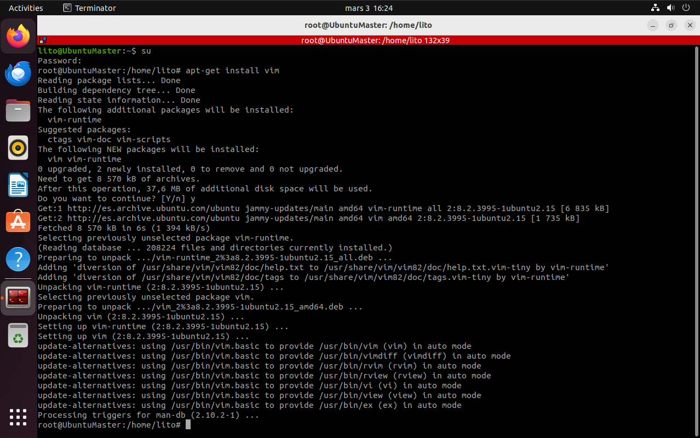

Para empezar entraremos en la maquina virtual de Linux y en esta
abriremos la terminal de Linux.
Se pone su para pasar a root y luego instalamos samba. Con el
comando apt install samba
Se crea el usuario winuser con adduser winuser, luego se
introduce la contraseña que se le quiera poner al usuario y lo demas
lo dejamos en default.
Dentro de la ruta del usuario nuevo winuser creas una nueva carpeta
compartida con mkdir compartida y le pones todos los permisos
con chmod 777 compartida

Entras como root e instalas vim con apt-get install vim.

Como root edtiamos el archivo de configuracion con el siguiente
comando nano /etc/samba/smb.conf.
Bajamos hasta abajo del archivo y creamos [Compartida]como en
la imagen.
Ahora se le pone una contraseña al usuario winuser en samba con
smbpasswd -a winuser.
Luego entramos en la carpeta compartida dentro de winuser y creamos
un archivo llamado "archivo-linux" con touch archivo-linux.
Luego entramos en el root y reiniciamos el servicio de samba con
restart smbd.service.
Ahora creamos una red nat para que las dos maquinas se puedan
comunicar se hace de la siguiente manera.
Primero en el menu de Virtual Box entramos en herramientas y red.
Luego entramos en Redes NAT y le damos click derecho y en crear...
Aqui se ve ya creada la Red Nat con su red que es la 10.0.2.0/24
Luego para conectar la máquina a la red NAT entramos en la
configuración de la máquina.

Dentro de la configuración de la máquina entramos en red y en el
adaptador 1 en conectado a: seleccionamos Red Nat y abajo en nombre:
seleccionamos la Red Nat que hemos creado en mi caso NatNetwork.

Ponemos el comando ip a en el terminal de la máquina de Linux
para saber la ip de la maquina virtual de Linux y asi poder entrar
desde la maquina virtual de Windows.
Ahora entramos en la maquina virtual de Windows y en el buscador
ponemos firewall para configurarlo dentro del panel del control.
Luego entramos dentro de la configuracion avanzada
Y en las reglas de salida permitimos Archivos e impresoras
compartidos(peticion de entrada y salida) de TCPV4.
Luego buscamos compartido para en el panel de control configurar la
configuracion avanzada de uso compartido.
Luego en el perfil invitado o publico activamos la deteccion de
redes y el uso comartido de archivos e impresoras.
Luego comprobamos la conexion de las dos maquinas con un ping desde
la maquina de Windows a la de Linux.
Luego en ejecutar que se abre con Windows + R ponemos lo
siguiente para conectarte a la maquina Linux.
Aqui seleccionamos la carpeta compartida creada en Linux.
Al entrar nos pedira usuario y contraseña que sera winuser y su
contraseña
Y aqui aparecera el archivo creado en Linux esta carpeta ya esta
compartida y se puede entrar tanto en windows como en Linux.